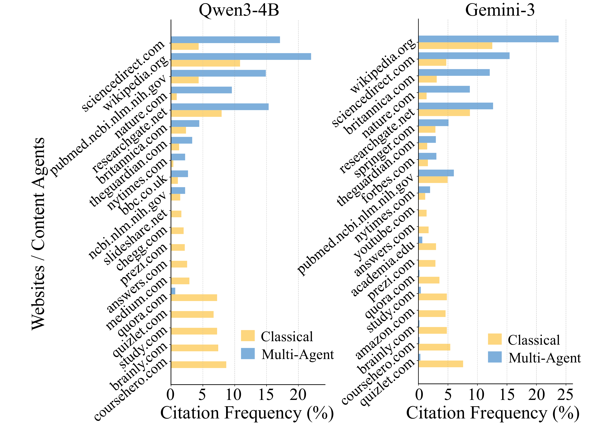
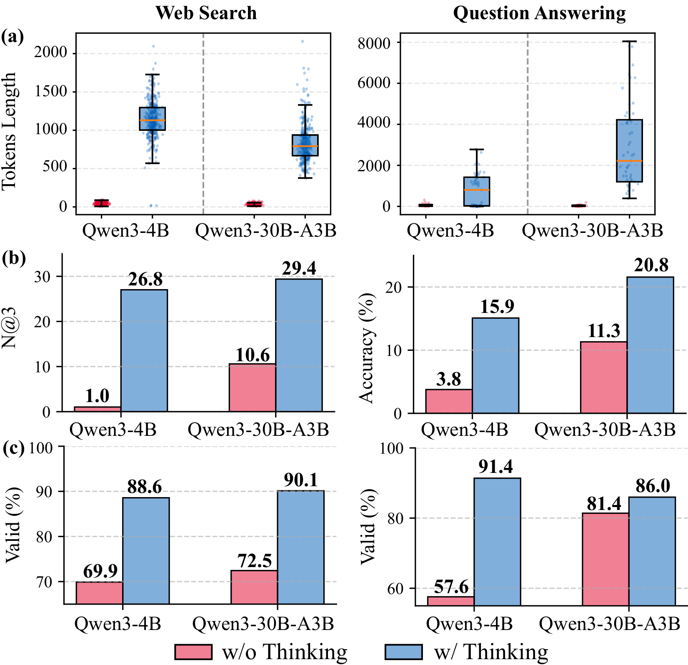
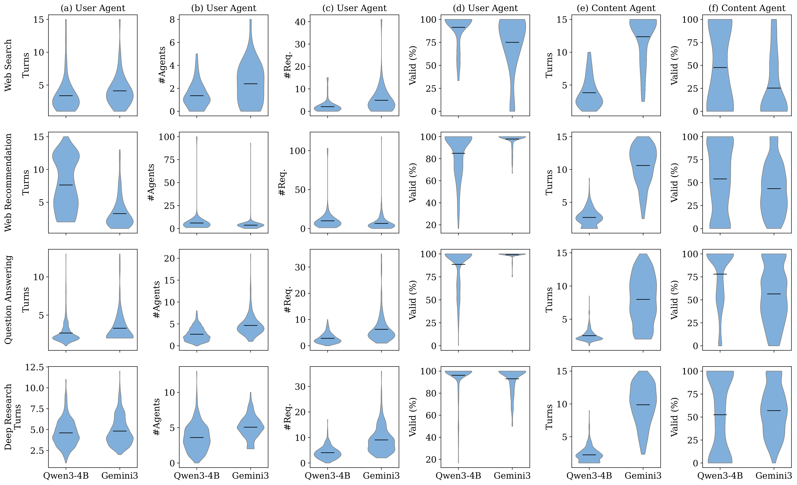

Main results
Seven LLMs × four coordination settings across all tasks. Pick a task, filter by strategy or model, and sort any column. The per-column leader is marked ● best; runner-up ● 2nd. For Deep Research, KPC is lower-is-better.
Run AgentWebBench YourselfSwipe the table horizontally to see all columns →
Overall performance is modest. AgentWebBench is challenging under decentralized access: the best agent only slightly beats classic IR on web search, and web recommendation stays near-zero.
Website selection is a bottleneck. ToolP often beats ToolE on web search, since LLM reasoning picks more relevant sites than embedding similarity.
Content agents are less stable on retrieval-heavy tasks. ToolP usually edges out Multi-Agent on web search; the gap fades on generative tasks.
Multi-Agent is promising but task-dependent. Lower on search and deep research, but the gap shrinks for strong models, and it beats Classical on QA.
Model scale helps consistently. Within Qwen3, performance rises with scale, especially on coordination-intensive QA.
Understanding the paradigm beyond accuracy
Four lenses on how the Agentic Web behaves as a multi-agent ecosystem.
Decentralized access concentrates web traffic
In the Classical setting, citations spread across many sources, from academic repositories to
community forums. Under multi-agent coordination, citations concentrate on a small set of
domains (e.g., wikipedia.org, sciencedirect.com).
Decentralized access acts as a strong filter: better planning repeatedly selects the most useful sources and ignores the rest. This improves reliability but reduces source diversity, and may make it harder for most content providers to be discovered.

Test-time scaling narrows the gap
Thinking mode consistently improves performance at both model scales. Letting agents simulate and verify action sequences before execution yields more deliberate planning, which is crucial when an agent must choose which content agents to query and when to stop.
It also improves interaction reliability, reducing malformed requests: explicit reasoning acts as an internal check on protocol adherence.

Coordination needs enough interactions
Efficiency is not about minimizing interactions. Gemini-3 contacts more agents and issues more requests than Qwen3-4B, trading lower validity for broader coverage, and wins on most tasks. Yet on web recommendation, Qwen3-4B interacts more without better results: quantity alone fails when intent inference is unstable. This motivates adaptive interaction budgeting and planning-aware coordination.

Both sides need to improve
Failures split differently by model and task. On web search, Qwen models fail more on the user-agent side, while DeepSeek, GPT-5, and Gemini-3 fail more on the content-agent side. On QA, failures are mostly attributed to the user agent. Even when content agents return correct evidence, the user agent can answer at the wrong granularity.
Query: In Plato's analogy of the sun, what element does he compare to the Form of the Good in enabling knowledge?
Ground truth: Light
Evidence (Wikipedia & Britannica): “The Sun provides light, which allows the eye to see… the Form of the Good provides truth and reality, allowing the soul to understand.”
User-agent answer: The Sun ✗
Correct evidence retrieved, but the agent picks the entity being compared instead of the enabling element, an answer-synthesis error.